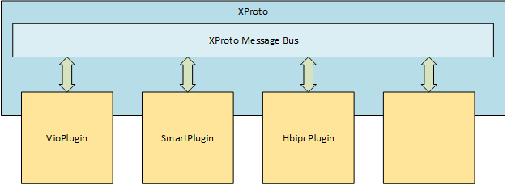

XProto用户手册¶
通过本文介绍，你可以熟悉XProto Framework原型框架的内部核心概念和使用。
整体综述¶
XStream聚集算法模型、策略的集成以及最终业务Workflow/SDK生成。而XProto是在XStream基础上，为基于XStream构建算法SDK提供APP的运行环境。它支持快速将XStream Workflow封装成可运行的APP，进行运行在地平线边缘芯片中。
下图是XProto APP基本架构图：

它内置了VioPlugin，SmartPlugin，HbipcPlugin，通过这些Plugin，实现图像数据的输入，编解码，图像预测，智能结构化以及到可视化的多阶段处理，完成智能应用的快速交付。
同时我们开放了XProto应用组件Plugin接口，支持用户对XProto框架进行扩展。
XProto消息总线¶
XProto Framework原型框架主要包括Plugin插件管理和消息分发两个部分。Plugin插件是一个任务实体，所有的Plugin插件都连接到XProto消息总线中，当一个Plubin插件产生消息并把消息Push到总线之后，其他订阅该消息的Plugin插件就可以被调用。
每一个Plugin插件都可以向总线订阅和发布消息，通过消息驱动方式来实现整个原型应用的落地。

Plugin插件开发¶
XProto原型框架包括总线、消息、插件三部分，其中插件都是继承于XPluginAsync，通过override的函数包括:Init()、Start()、Stop()、Desc();来管理插件的生命周期。
插件可能会生产消息或者向总线注册监听某类消息。如果生产消息需要调用PushMsg()将消息发送到总线分发;如果监听消息，需要实现消息处理函数，并在Init函数中注册需要监听的消息类型，并绑定对应的消息处理函数，同时在Init函数返回前调用父plugin的Init方法，通常是XPluginAsync::Init()。
消息的声明与定义：
使用宏XPLUGIN_REGISTER_MSG_TYPE,自定义消息类型，每个消息名字唯一；
新的Message类型需要继承XProtoMessage;
需要监听消息的插件需要：
实现消息处理函数；
覆盖Init函数，在其中完成监听消息注册，并绑定对应的消息处理函数，
及其他初始化工作，同时在函数返回前需要调用父plugin的Init方法，
通常是XPluginAsync::Init()。
sample程序参考xsdk/common/xproto/framework/sample/sample_plugin.cpp
//定义消息名称
#define TYPE_SAMPLE_MESSAGE "XPLUGIN_SAMPLE_MESSAGE"
XPLUGIN_REGISTER_MSG_TYPE(XPLUGIN_SAMPLE_MESSAGE)
//实现一个Message消息类型
struct NumberProdMessage : XProtoMessage {
float num_;
explicit NumberProdMessage(float num) :num_(num) {
type_ = TYPE_SAMPLE_MESSAGE;//指定消息类型
}
std::string Serialize() override {
std::ostringstream ss;
ss << num_;
return std::string(ss.str());
}
};
class NumberProducerPlugin : public XPluginAsync {
public:
//启动插件，并在插件里面管理了一个发送消息线程。
int Start() {
prd_thread_ = new std::thread([&] (){
for (uint32_t i = 0; i < total_cnt_ && !prd_stop_; i++) {
auto np_msg = std::make_shared<NumberProdMessage>(5);
PushMsg(np_msg);
std::this_thread::sleep_for(milliseconds(40));
}
LOGI << desc() << " prd exit";
});
return 0;
}
//关闭插件，关闭发送消息线程。
int Stop() {
prd_stop_ = true;
prd_thread_->join();
return 0;
}
};
class SumConsumerPlugin : public XPluginAsync {
public:
int Init() override {
sum_ = 0.f;
// 注册消息回掉函数函数
RegisterMsg(TYPE_SAMPLE_MESSAGE,
std::bind(&SumConsumerPlugin::Sum,
this, std::placeholders::_1));
return XPluginAsync::Init();
}
int Sum(XProtoMessagePtr msg) {
auto np_msg = std::static_pointer_cast<NumberProdMessage>(msg);
sum_ += np_msg->num_;
LOGI << "curr sum:" << sum_;
return sum_;
}
int Stop() {
return 0;
}
private:
float sum_;
};
重要接口说明¶
// 声明消息类型;每一类消息都有一个字符串形式的消息类型和结构体来表示.
// 该接口为一个宏, 参数MSG_TYPE用来表示声明的消息类型, 需要直接使用标识符的格式书写, 宏内部会将其转成字符串.
// 需要在消费者Plugin调用订阅消息接口之前调用该接口声明消息类型,一般将该宏放在全局变量声明的位置.
// 参数：MSGTYPE: 消息类型
XPLUGIN_REGISTER_MSG_TYPE(MSG_TYPE)
// 初始化Plugin
// 该接口需要继承XPluginAsync类的自定义Plugin实现该接口定义. 该接口用来初始化Plugin，自定义Plugin一般在该接口内调用订阅消息接口, 然后继续调用XPluginAsync::Init接口以初始化父类.
// 返回值：0: 成功；非0: 失败
int XPluginAsync::Init() override;
// 启动Plugin
// 该接口需要继承XPluginAsync类的自定义Plugin实现该接口定义. 该接口用来启动Plugin.
// 返回值：0: 成功；非0: 失败
int XPluginAsync::Start();
// 停止Plugin
// 该接口需要继承XPluginAsync类的自定义Plugin实现该接口定义. 该接口用来停止Plugin.
// 返回值：0: 成功；非0: 失败
int XPluginAsync::Stop();
// 反初始化Plugin
// 该接口需要继承XPluginAsync类的自定义Plugin实现该接口定义. 该接口用来反初始化Plugin. 继承自XPluginAsync子plugin类，在完成自己的反初始化任务后，最后需要调用XPluginAsync::DeInit接口以反初始化父类.
// 返回值：0: 成功；非0: 失败
int XPluginAsync::DeInit() override;
// 发布消息
// 该接口用来将消息发布到XProto内部总线上. 接收一个类型为XProtoMessage的结构体指针, XProto的所有消息都继承于该类型.
// 参数：XProtoMessagePtr msg: 发布到总线的消息.
void XPluginAsync::PushMsg(XProtoMessagePtr msg);
// 订阅消息
// 订阅指定类型的消息. 监听总线, 当指定的消息类型发布时, 调用回调函数.
// 自定义的Plugin需要在Init函数中，调用XPluginAsync::Init之前调用该接口完成监听消息注册。
// 参数：const std::string& type: 消息类型字符串.
// 参数：XProtoMessageFunc callback: 该类型消息的回调函数.
void XPluginAsync::RegisterMsg(const std::string& type, XProtoMessageFunc callback);
// 插件描述信息
// 该接口需要继承XPluginAsync类的自定义Plugin实现该接口定义.
// 返回值：描述当前自定义Plugin的字符串.
std::string XPluginAsync::desc() const;
内置Plugin列表¶
1. VIOPlugin¶
VIOPlugin的应用场景用于x2系统，负责获取、转换图像数据并控制图像数据获取速率，然后将图像数据或丢帧消息推送给消息总线。它主要分为两部分：
图像数据的获取：图像来源可以分为SIF（摄像头）、JPEG回灌图片和NV12回灌图片。
控制图像数据获取速率：VioPlugin中通过定长buffer来实现速率控制。buffer大小可以通过JSON文件进行配置。单输入图像源的情况下理论最多可达7个，当智能帧产生速率过慢，buffer耗尽时，VioPlugin产生主动丢帧数据
消息的产生和推送：消息分为图像数据消息与主动丢帧数据消息，由第一部分产生后推送至消息总线。
VioPlugin配置文件如下：
{
"cam_type": "mono",
"data_source": "ipc_camera",
"max_vio_buffer": 3,
"ts_type": "input_coded",
"file_path": "name.list",
"pad_width": 1920,
"pad_height": 1080,
"vio_cfg_file": {
"ipc_camera": "configs/vio/hb_vio.json",
"panel_camera": "configs/vio/panel_camera.json",
"jpeg_image_list": "configs/vio/vio_onsemi0230_fb.json",
"nv12_image_list": "configs/vio/vio_onsemi0230_fb.json",
"image": "configs/vio/vio_onsemi0230_fb.json"
}
}
各个字段的含义:
cam_type : 镜头类型，单目(mono)或双目(dual)
data_source : 输入源类型:
ipc_camera : IPC等后接场景，输入通常为bt1120
panel_camera : 面板机等前接场景，输入通常为mipi
jpeg_image_list : jpeg格式的回灌图片
nv12_image_list : nv12格式回灌图片
max_vio_buffer : 控制Vio pending帧数上限，最大缓存数量。如果递交给消息总线的消息大于该数量, 则新的消息会丢弃,
ts_type : VIO时间戳类型. 该时间戳会填充到视频帧消息中
input_coded : 通过y图的前16个字节的编码获得时间戳，通常用于ipc等后接场景
frame_id : 读取vio数据结构的frame_id字段作为时间戳，96board等使用该配置
raw_ts : 读取vio数据结构中的timestamp字段作为时间戳，面板机standalone方案使用该类型
file_path : 回灌图片的name list，用于回灌场景。
pad_width : jpeg回灌时图片对齐参数，用于回灌场景。
pad_height : jpeg回灌时图片对齐参数，用于回灌场景。
vio_cfg_file : 对应每种输入源的详细配置文件。
VioPlugin会向消息总线推送”生产消息类型”和“丢帧消息”两种消息类型：
XPLUGIN_IMAGE_MESSAGE: 图像帧类型的消息struct ImageVioMessage : VioMessage {};。XPLUGIN_DROP_MESSAGE: 丢帧消息struct DropVioMessage : VioMessage {};。
其中图像帧消息和丢帧消息的共同继承于VioMessage结构体.
struct VioMessage : public XProtoMessage {
public:
VioMessage() { type_ = TYPE_IMAGE_MESSAGE; };
virtual ~VioMessage() = default;
// 图像帧个数
uint32_t num_ = 0;
// 帧ID：同时进入VIO模块的多张图片会分配同一个ID
uint64_t sequence_id_ = 0;
// 时间戳
uint64_t time_stamp_ = 0;
// 用于回灌场景，表示回灌图片uri是不是一张有效的图片帧数据
bool is_valid_uri_ = true;
};
同时，VioPlugin提供了以下公共接口，支持客户在业务逻辑中进行集成：
class VioPlugin : public xproto::XPluginAsync {
public:
VioPlugin() = delete;
// 构造VioPlugin对象, 并指定VIO配置文件.
explicit VioPlugin(const std::string &path);
~VioPlugin() override;
// 初始化Plugin.
int Init() override;
// 启动Plugin.
int Start() override;
// 停止VioPlugin。
int Stop() override;
};
关于VIOPlugin，详细参考README。
2. IoTVioPlugin¶
IoTVioPlugin的的应用场景是用于X3系统，整体框架、消息总线传输机制实际是和上面VIOPlugin的功能类似。主要功能负责获取、转换图像数据并控制图像数据获取速率，然后将图像数据或丢帧消息推送给消息总线。针对于接口层，最主要的区别是IoTVioPlugin不仅支持与X2 VioPlugin相同的原生接口，还是支持与海思一样类似的接口。IoTVioPlugin同样分为两个部分：
图像数据的获取：图像来源可以分为SIF（摄像头）、JPEG回灌图片和NV12回灌图片。
控制图像数据获取速率：VioPlugin中通过定长buffer来实现速率控制。buffer大小可以通过JSON文件进行配置。单输入图像源的情况下理论最多可达7个，当智能帧产生速率过慢，buffer耗尽时，VioPlugin产生主动丢帧数据
消息的产生和推送：消息分为图像数据消息与主动丢帧数据消息，由第一部分产生后推送至消息总线。
IotVioPlugin总体配置文件与上面的基本一致, 最主要的区别是IotVioPlugin有一套自己独立的配置文件。
{
"need_cam": 1,
"cam_num": 1,
"vps_dump": 0,
"vps_layer_dump": 4,
"cam0": {
"sensor": {
"sensor_id": 13,
"sensor_port": 0,
"mipi_idx": 1,
"i2c_bus": 4,
"serdes_index": 0,
"serdes_port": 0
},
"grp_num": 1,
"grp0": {
"fb_width": 1920,
"fb_height": 1080,
"fb_buf_num": 8,
"vin_fd": 0,
"vin_vps_mode": 0,
"need_clk": 0,
"need_md": 0,
"need_chnfd": 0,
"need_dis":0,
"dol2_vc_num":0,
"chn_num": 7,
"chn0": {
"ipu_chn_en": 0,
"pym_chn_en": 0,
"scale_en": 0,
"width": 1920,
"height": 1080,
"frame_depth": 8
},
...
"chn6": {
"ipu_chn_en": 1,
"pym_chn_en": 1,
"scale_en": 1,
"width": 3840,
"height": 2160,
"frame_depth": 8
},
"pym": {
"pym_ctrl_config": {
"frame_id": 1,
"ds_layer_en": 23,
"ds_uv_bypass": 0,
"us_layer_en": 0,
"us_uv_bypass": 0,
"frame_depth": 8,
"timeout": 2000
},
"pym_ds_config": {
"roi_x_1": 0,
"roi_y_1": 0,
"roi_w_1": 0,
"roi_h_1": 0,
"factor_1": 0,
...
"roi_x_23": 0,
"roi_y_23": 0,
"roi_w_23": 0,
"roi_h_23": 0,
"factor_23": 0
},
"pym_us_config": {
"roi_x_0": 0,
"roi_y_0": 0,
"roi_w_0": 0,
"roi_h_0": 0,
...
"roi_x_5": 0,
"roi_y_5": 0,
"roi_w_5": 0,
"roi_h_5": 0,
"factor_5": 0
}
}
}
}
}
各个字段的含义:
* need_cam: 等于1是是使用实时camera；等于0是回灌模式
* cam_num: 支持获取实时camera的数量
* vps_dump: 使能vps功能dump pym基础层的nv12图像，用于调试
* vps_dump_layer: 使能vps功能dump pym任意层(包括roi层)的nv12图像，用于调试
* cam0: 第一个camera名称，可根据硬件设计，自行扩展多个cam，目前最大同时支持6路
* sensor: 说明以下是sensor的配置属性
* sensor_id: sensor的型号。其中imx327是1, osa810是5, s5kgm1sp是13
* sensor_port: sensor端口。根据具体硬件，一般默认为0
* mipi_idx: mipi host索。根据具体硬件，一般如果是接入I2C0，则为0；如果是I2C4或者I2C5，则为1
* i2c_bus: i2c总线号。根据具体硬件，推荐imx327和os8a10是I2C5，s5kgm使用I2C4
* serdex_index: 加解串的索引。根据具体硬件，一般为0
* serdex_port: 加解串的端口。根据具体硬件，一般为0
* grp_num: vps组的数量。对于实时cam方式，必须等于1，即一个cam就是一组，如果6个cam，就是6个组；
如果是回灌方式，可以起任意多组
* grp0: 说明以下是第0组的属性
* fb_width: 回灌图片的宽度
* fb_height: 回灌图片的高度
* fb_buf_num: 回灌的轮转buffer数量
* vin_fd: vin fd句柄,一般为0
* vin_vps_mode: vin和vps模块内部和模块之间的模式，0为全部是在线模式，1为vin->vps是离线模式
* need_clk: 是否需要x3输出clk供给sensor子板，根据具体硬件。例如如果子板没有晶振，需用x3输出clk供给sensor，即need_clk等于1
* need_md: 是否需要使能motion detect功能，一般为0
* need_chnfd: 是否需用设置通道fd，一般为0
* need_dis: 是否需用电子防抖功能，一般为0
* dol2_vc_num: mipi虚拟通道数，一般为0
* chn_num: vps通道数，这里固定为7，chn0~chn5是offline离线通道，chn6是在线通道
* chn0: 说明以下是chn0的配置属性，该通道是离线通道
* ipu_chn_en: 是否使能chn0的ipu通道，1是使能，0是disable
* pym_chn_en: 是否使能chn0的pym通道，1是使能，0是disalbe
* scale_en: 是否使能缩放功能，注意：如果ipu_chn_en使能了，该位也必须使能
* width: 缩放后的宽度
* height: 缩放后的高度
* frame_depth: 申请的vio buffe该通道的最大frame buffer数量，默认为8，底层会默认使用5个buffer，留给应用的就是8-5 = 3个vio buffer，frame_depth最大值为32
* chn0: 说明以下是chn6的配置属性，该通道在线通道
* ipu_chn_en: 是否使能chn0的ipu通道，1是使能，0是disable，注意：ipu和pym的通道必须同时为1或者为0
* pym_chn_en: 是否使能chn0的pym通道，1是使能，0是disalbe, 注意：ipu和pym的通道必须同时为1或者为0
* scale_en: 是否使能缩放功能，注意：如果ipu_chn_en使能了，该位也必须使能
* width: 缩放后的宽度
* height: 缩放后的高度
* frame_depth: 申请的ipu通道最大frame buffer数量，默认为8，底层会默认使用5个buffer，留给应用的就是8-5 = 3个vio buffer，frame_depth最大值为32
* pym: 说明以下是pym的配置属性
* pym_ctrl_config: 说明以下是pym控制配置属性
* frame_id: frame id的起始号，一般为1
* ds_layer_en: downscale一共使能多少层，一般为23 (0~23层)
* ds_uv_bypass: 是否bypass ds uv层，一般为0
* us_layer_en: upscale一共使能多少层，根据需用设置，最大为6层
* us_uv_bypass: 是否bypass us uv层，一般为0
* frame_depth: 申请的pym通道最大frame buffer数量，默认为8，底层会默认使用5个buffer，留给应用的就是8-5 = 3个vio buffer，frame_depth最大值为32
* timeout: 上层阻塞获取pym frame的超时时间，单位为ms，默认为2000ms
* pym_ds_config: 说明以下是pym downscale的roi层配置属性
* roi_x_1: 金字塔第1层roi区域相对于对应基本层左顶点坐标x
* roi_y_1: 金字塔第1层roi区域相对于对应基本层左顶点坐标y
* roi_w_1: 金字塔第1层roi区域宽度，不能超过其基础层宽度
* roi_h_1: 金字塔第1层roi区域高度，不能超过其基础层高度
* factor_1: 金字塔第1层roi缩放系数，整体计算缩放为基础层的64/(64 + factor)的倍数。factor 为0时，表示disable 该层缩放，factor 取值范围 0--63
* pym_us_config:说明以下是pym upscale的roi层配置属性
* roi_x_0: 金字塔第0层roi区域相对于对应基本层左顶点坐标x
* roi_y_0: 金字塔第0层roi区域相对于对应基本层左顶点坐标y
* roi_w_0: 金字塔第0层roi区域宽度，不能超过其基础层宽度
* roi_h_0: 金字塔第0层roi区域高度，不能超过其基础层高度
* factor_0: 金字塔第0层roi放大系数，factor 为0时，表示disable 该层缩放，factor 取值为固定值，即：
* factor_0: 50 放大1.28倍
* factor_1: 40 放大1.6倍
* factor_2: 32 放大2倍
* factor_3: 25 放大2倍
* factor_4: 20 放大3.2倍
* factor_5: 16 放大4倍
*
3. SmartPlugin¶
SmartPlugin是基于XStream通用SDK接口开发的通用智能应用运行框架。它监听XProto总线上面的VioPlugin送来的XPLUGIN_IMAGE_MESSAGE类型消息，并且将它送到XStream的workflow实例里面，同时接收workflow输出的结果，并将其序列化后产生智能消息然后送回到消息总线上。
SmartPlugin主要是作为XStream的Container，它会将XStream Output数据以XPLUGIN_IMAGE_MESSAGE类型推送到总线中。
对SmartPlugin定制主要分为三步：
根据自己的场景需要依赖的XStream Method，创建一个Method Factory。
针对自己场景的智能化应用需要输出的智能化结果修改protobuf文件，并重新实现SmartMessage的
Serialize方法。修改SmartPlugin配置文件
{ "xstream_workflow_file": "configs/det_mot.json", "enable_profile": 0, "profile_log_path": "/userdata/log/profile.txt" }
xstream_workflow_file: 指定xstream workflow配置文件;
enable_profile: 是否使能online profile，该feature是XStream支持的feature，如果method开发中包括了profile信息可通过该开关online使能;
profile_log_path: online profile 日志输出路径。
同时，VioPlugin也提供了以下公共接口，支持客户在业务逻辑中进行集成：
class SmartPlugin : public XPluginAsync {
public:
SmartPlugin() = default;
// 构造SmartPlugin对象, 并指定VIO配置文件.
explicit SmartPlugin(const std::string& config_file);
void SetConfig(const std::string& config_file) { config_file_ = config_file; }
// 初始化Plugin.
int Init() override;
// 启动Plugin.
int Start() override;
// 停止VioPlugin。
int Stop() override;
};
SmartPlugin只支持加载一个workflow配置文件，但是在一些AI盒子等复合应用场景，需要支持多Workflow数据流。关于多路输入和多Workflow数据流方案，详细参考README。
关于SmartPlugin，详细参考README。
4. HbipcPlugin¶
HbipcPlugin为跨板传输插件，主要负责实现AP与地平线CP端的双向通信功能，CP端通过HbipcPlugin将智能帧等数据发送到AP端，或者通过HbipcPlugin接收AP端发过来的配置数据与命令数据。
HbipcPlugin是基于地平线HBIPC框架实现，使用之前需要先提供一个HBIPC的配置参数：
{
"domain_name": "X2SD001",
"server_id": [0, 1, 2, 3, 4, 5, 6, 7, 8, 9, 10, 11, 12, 13, 14, 14]
}
domain_name表示HBIPC通信域， 可选的值有X2SD001和X2BIF001。server_id表示CP侧的服务ID，UUID格式。AP侧在建立连接的时候会用到该UUID。
当HBIPCPlugin收到AP侧发来的配置数据和命令数据时，会将其以XPLUGIN_HBIPC_MESSAGE类型的消息发送到XProto内部总线。消息对应的结构体定义如下：
struct HbipcMessage : XProtoMessage {
HbipcMessage() { type_ = "XPLUGIN_HBIPC_MESSAGE"; }
std::string Serialize() override { return "Default hbipc message"; }
virtual ~HbipcMessage() = default;
};
struct CustomHbipcMessage : HbipcMessage {
explicit CustomHbipcMessage(std::string proto) : proto_(proto) {
type_ = "XPLUGIN_HBIPC_MESSAGE";
}
std::string Serialize() override;
private:
std::string proto_;
};
HBIPCPlugin负责将VioPlugin和SmartPlugin产生的消息发送到AP侧，所以它需要监听总线上面的XPLUGIN_SMART_MESSAGE、XPLUGIN_IMAGE_MESSAGE和XPLUGIN_DROP_MESSAGE。
XPLUGIN_SMART_MESSAGE: 智能数据帧。XPLUGIN_IMAGE_MESSAGE：图像数据帧。XPLUGIN_DROP_MESSAGE：报告VIOPlugin丢弃的帧。
同时，HbipcPlugin也提供了以下公共接口，支持客户在业务逻辑中进行集成：
class HbipcPlugin : public XPluginAsync {
public:
HbipcPlugin() = default;
// 构造HbipcPlugin对象, 并指定VIO配置文件.
explicit HbipcPlugin(const std::string& config_file);
void SetConfig(const std::string& config_file) { config_file_ = config_file; }
// 初始化Plugin.
int Init() override;
// 反初始化plugin
int Deinit();
// 启动Plugin.
int Start() override;
// 停止VioPlugin。
int Stop() override;
};
关于HBIPCPlugin，详细参考README。